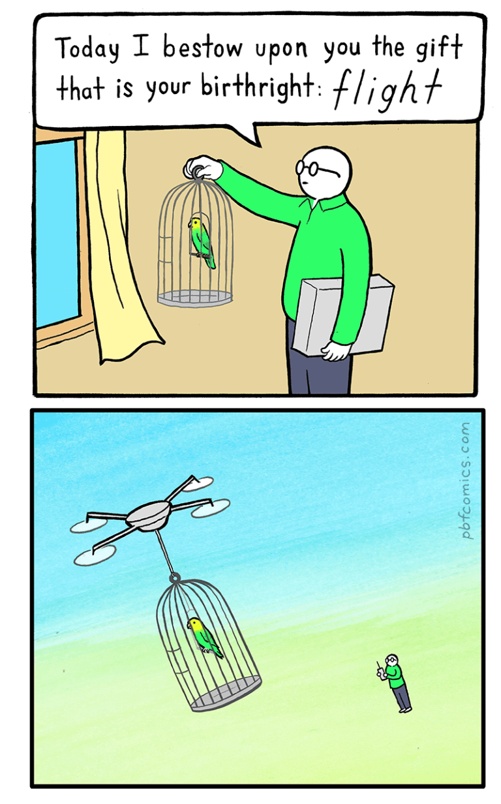

Em seu famoso discurso de paraninfo para formandos do Kenyon College, em 2005, o escritor norte-americano David Foster Wallace nos presenteia com uma pequena história, seguida de uma breve explicação, que reproduzo abaixo:
Dois peixinhos estão nadando e cruzam com um peixe mais velho que vem nadando no sentido contrário, que os cumprimenta dizendo: “Bom dia, meninos. Como está a água?”. Os dois peixinhos continuam nadando por mais algum tempo, até que um deles olha para o outro e pergunta: “Água? Que diabo é isso?”. […] se acham que pretendo me colocar na posição do peixe mais velho e mais sábio que explicará o que é a água para vocês, os peixinhos, por favor, não temam. Não sou o peixe velho e sábio. Minha intenção com a historinha do peixe é simplesmente mostrar que as realidades mais óbvias, onipresentes e fundamentais são com frequência as mais difíceis de ver e conversar a respeito.1
Parto dessa provocação inicial porque ela nos ajuda a iluminar um ponto que parece tão central quanto oculto: o de que temos grande dificuldade de reconhecer as realidades mais óbvias, onipresentes e fundamentais e que tamanha dificuldade vem do fato de que nosso olhar foi forjado dentro delas, tendo internalizado e naturalizado, com maior ou menor consciência, seu sistema de valores e padrões de pensamento.
E não é preciso muita sagacidade para perceber que, como filhos do tempo que somos, muito do nosso sistema de valores e padrões de pensamentos foi forjado dentro de uma perspectiva capitalista de mundo que está profundamente arraigada em nós. Caso duvide, convido-lhe a fazer um experimento: imagine como seria ter a vida dos seus sonhos. Seja radicalmente livre para imaginar o que quiser. Como seria essa vida? Onde você estaria, o que faria, como viveria seus dias?
...
É bem possível que a vida dos sonhos que você idealizou ainda se paute em referências desse mundo tal qual o conhecemos: talvez você tenha sonhado em trabalhar com algo que lhe desse mais dinheiro ou realização pessoal, mas não tenha pensado na possibilidade de não precisar trabalhar. Talvez você tenha sonhado em ter uma vida confortável, com todas as contas pagas, mas não tenha cogitado viver num mundo onde não existissem contas e nem mesmo dinheiro. Dito de outro modo, talvez a vida que você sonhou ainda seja moldada, sem que você perceba, por valores e padrões de pensamento estritamente capitalistas. Difícil não lembrar aqui da conhecida frase atribuída a Fredric Jameson e Slavoj Zizek, segundo a qual é mais fácil imaginar o fim do mundo do que imaginar o fim do capitalismo2.
"Hoje eu concedo a você o presente que é seu direito inato: voar". Como superar a limitação da nossa capacidade imaginativa?
E assim esse sistema de valores e padrões de pensamento avança, século após século, colonizando nosso consciente e inconsciente, sendo vigorosamente defendido por muitos, especialmente os que mais se beneficiam dele, como o único modo de vida possível, sobretudo depois do fim da era soviética. Desse modo, limitando nossa capacidade imaginativa de conceber outras realidades, ele segue incorporando tudo o que encontra e transformando em matéria-prima para sua própria manutenção, incluindo práticas, tradições e cosmologias gestadas em culturas outras, algumas vindas de tempos imemoriais. É o caso da meditação, prática contemplativa presente em tradições orientais, como o budismo, e parte fundamental do caminho para se alcançar a lucidez, ultrapassar as bolhas de confusão e liberar-se do sofrimento.
Nas últimas décadas e, mais ainda, nos últimos anos, essa prática originada em tradições de sabedoria milenar encontrou na sociedade de consumo a sua versão de prateleira. É sobre esse processo de corrupção de seu sentido original, e os usos feitos dela para sustentar relações de exploração, que vai nos falar a banda El Efecto em sua canção “O Monge e o Executivo” (2018).
A inspiração para a música veio da capa de um álbum considerado fundamental na formação musical do grupo, Rage Against the Machine, da banda homônima, agora lida sob a perspectiva do capitalismo zen3.
Apesar da inspiração ter vindo de uma banda de rock, a música bebe de vários gêneros. Seu início segue ritmo circunspecto e lento, lembrando um canto ritualístico com influências orientais. Assim, logo na primeira estrofe, é apresentado o encontro do “gerente iluminado” com a filosofia zen:
O mercado é como a guerra, só os mais sábios vão além
O ocidente enfim desperta e flerta com a filosofia zen
Foi um gerente iluminado pela semente da inovação
Calculou que o espírito elevado dinamiza a produção
Num tom que flerta o tempo todo com o sarcasmo, vamos acompanhando executivos e lideranças empresariais inserindo mantras e práticas meditativas em meio à rotina massacrante dos trabalhadores com a clara intenção de aumentar a produtividade, enquanto anestesia a raiva e insatisfação provocadas pela condição de exploração imposta por esses mesmos homens de negócios:
Jornadas de 14 horas ao som de mantras do Tibet
Assim a raiva se controla, então o império segue em pé
Após o expediente, convoca-se a meditação
No pleno equilíbrio da mente a gente sente gratidão
Caminhando sobre as brasas dos cadáveres no chão
Sinta a mente esvaziada, toda dor é uma ilusão
Levitando junto aos fluxos das ações em ascensão
O desapego purifica a aura da especulação
Meditando atrás de bem-estar, enquanto financia a dor
Hoje eu canto pra acabar com toda paz interior
A busca da classe empresarial por sua própria paz interior e elevação espiritual é a todo momento confrontada com a ausência de qualquer preocupação ética com suas ações e os impactos que elas geram sobre o mundo à sua volta. Na prática, vemos seres atomizados, com objetivos de vida individualistas e um horizonte que vai somente até onde o lucro alcança – ou seja, nada mais do que os valores e padrões de pensamento forjados numa visão capitalista de mundo que tende a enxergar tudo (inclusive a meditação e a espiritualidade) como “recurso”, sempre passível de ser instrumentalizado em benefício próprio. Esvazia-se, com isso, toda a premissa ética na qual se baseiam as tradições contemplativas, empregando-se uma leitura empobrecedora, e muito conveniente, da prática meditativa como mera posição interna de apatia e indiferença frente à opressão perpetrada.
Assim, a uma certa altura, a atmosfera da música se transforma e ganha o tom combativo e acusatório do rap, que ganha ritmo e velocidade na voz de Helen Nzinga:
Tô ligada neles, tô atenta e já notei que na verdade eles tão simulando
Te chamam colaborador pra omitir que na real eles tão te explorando
Pessoas elevadas aumentaram o lucro e aumentaram a concentração
Dieta natural, evita comer carne só que bebe o sangue dos irmão
Executivo zen do bem que desapega de tudo que é material
Compra roupa cara e fala da empregada se a camisa ela lava mal
Comida processada, câncer enlatado, comprei carne sabor papelão
O magnata da indústria vende lixo comestível pra população
Esse é o segredo do cash
Kakashi, fala baixo porque eles estão meditando
Luxo made in Bangladesh
Bem oriental, um fake ao estilo branco
Yoga na moda da elite
O opressor busca equilíbrio e bem tranquilo
Explora, controla, oprime, violenta o povo do Haiti
Ritual ocidental de apropriação da cultura
Larga a bomba em Nagasaki, depois faz acupuntura
Essa culpa não tem cura nem nunca haverá perdão
Chegaram os ratos pra roer com o feng shui da mansão
À classe trabalhadora, e aos oprimidos como um todo, cabe, por sua vez, ser o lembrete incômodo e persistente de que esse equilíbrio e falsa paz não ficarão impunes, como deixam ainda mais claro os versos finais da música:
Porque nos túneis debaixo do chão chora a lembrança
Sobre a chuva de napalm na pele de uma criança
Pra essa culpa não tem cura, nem nunca haverá perdão
Segura que agora é hora da tua purificação
Já não vai dormir em paz, o honorável self-made man
A insônia lhe corrói, a babilônia rói
É que a cerimônia tá pra começar!
O executivo quer ser zen, o monge ensina como faz
Pega querosene, não corre nem treme
Taca fogo nessa falsa paz
Para honrar quem lenha pra tua fornalha foi
Lenha pra tua fogueira eu serei
A imagem do fogo como meio de expurgar o opressor cai bem como recurso narrativo, dando um tom quase redentor ao desfecho da canção, mas talvez soe um tanto otimista, já que podemos nos perguntar, e aqui volto ao início do texto, até que ponto essa realidade tão óbvia, onipresente e fundamental está, de fato, nítida para nós – por “realidade” entenda-se o sistema de exploração ao qual os mais fragilizados estamos submetidos. Dito de outro modo: estamos realmente cientes de como esse sistema opera e de como estamos sendo cooptados a continuar trabalhando docilmente para a sua manutenção?
Essa pergunta não surge em vão, afinal, basta lembrar que se disseminam práticas de mindfulness empresarial com a promessa, muito explícita e propagandeada, de desestressar os funcionários, aumentar o foco no trabalho e alavancar a produtividade. Desse modo, desvia-se o olhar da fonte do problema – as relações de trabalho cada vez mais massacrantes – para os seus sintomas – estresse, ansiedade, distúrbios do sono etc. Ou seja, trata-se um problema estrutural como se individual fosse, colocando-se sobre o indivíduo a responsabilidade pelo seu mal-estar e também pela sua recuperação. Dessa maneira, dissociada de seu contexto original, a meditação passa a ser instrumentalizada como solução atomizada para trabalhadores atomizados. E, o que é pior, muitos de nós compramos essa ideia sem sequer perceber seu viés ideológico.
Nesse ponto, é preciso recuperar o papel fundamental que a arte pode exercer, fazendo-nos aguçar o olhar para o mundo e para nossa condição de vida dentro dele – e isso, “O Monge e o Executivo” consegue fazer brilhantemente ao expor a face abjeta de uma realidade que se tenta impor a todo custo como a única possível. Ou seja, a canção nos dá justamente aquilo que nos tem sido tirado: a capacidade de enxergar com maior nitidez e senso crítico o que está diante de nós. E assim, uma vez tendo reconhecido e desnaturalizado as relações de exploração e desigualdade às quais estamos submetidos, podemos, enfim, começar a imaginar outros mundos possíveis.
Em outras palavras, como disse David Foster Wallace ao final de seu discurso, precisamos repetir para nós a todo momento: “Isto é água, isto é água”.
- “Isto é Água”. Pode ser lido na íntegra aqui
- Sobre o estreitamento do horizonte de possibilidades para além do capitalismo e a necessidade de fortalecer a capacidade imaginativa, sugiro este e este podcast, ambos sobre Mark Fisher e seu livro Realismo Capitalista, recém-lançado no Brasil pela Editora Autonomia Literária.
- Uma breve explicação sobre a música, segundo a própria banda, e outras faixas do álbum, pode ser lida aqui.